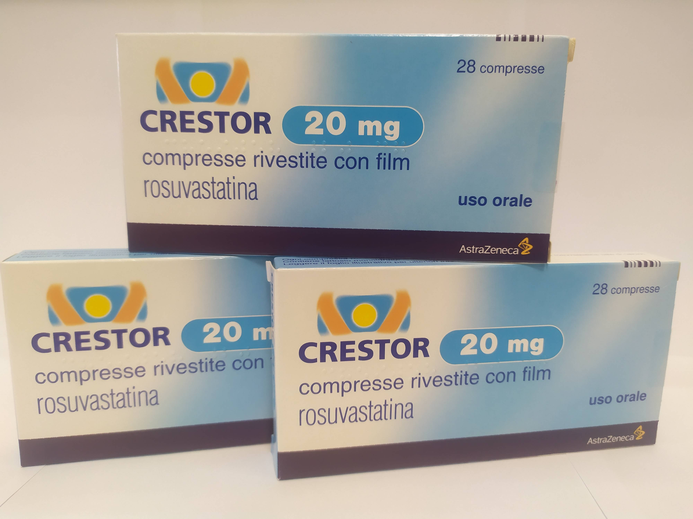

Контактная информация:
Цена: 650 грн/уп.
В наличии
Производитель: Великобритания
Цена: 650 грн/уп.
В наличии
Именно в FarmItal вы можете купить Крестор 20мг, Crestor 20mg в Украине. Гарантировано качественное лекарство из Италии!
Доставка Crestor 20mg осуществляется транспортными компаниями, сроки выполнения заказа оговариваются менеджером Фармитал. Вы можете заказать Крестор 20мг в городах: Одесса, Херсон, Чернигов, Северодонецк, Бердянск, Бровары, Днепр, Винница, Киев, Славянск, Полтава, Краматорск, Белая Церковь, Каменское, Мариуполь, Черновцы, Александрия, Каменец -Подольский, Львов, Запорожье, Кропивницкий, Житомир, Ивано-Франковск, Сумы, Черкассы, Константиновка, Мелитополь, Кривой Рог, Ровно, Луцк, Никополь, Павлоград, Ужгород, Кременчуг, Лисичанск, Хмельницкий, Тернополь, Харьков, Николаев, а также других населенных пунктах Украины.
таблетки 20 мг - круглые, двояковыпуклые розового цвета, покрытые оболочкой
1 таблетка содержит розувастатина 20 мг или 40 мг в виде розувастатина кальция;
другие составляющие: лактозы моногидрат, целлюлоза микрокристаллическая, кальция фосфат, кросповидон, магния стеарат, гипромелоза, глицерол триацетат, титана диоксид, железа оксид красный, вода очищенная.
Таблетки, покрытые оболочкой.
Первоначальная гиперхолестеринемия (тип IIа, включая семейную гетерозиготную гиперхолестеринемию) или смешанная гиперхолестеринемия (тип ІІв) в качестве дополнения к диете, когда диета и другие медикаментозные методы лечения (например, физические упражнения, уменьшение веса) недостаточны. Семейная гомозиготная гиперхолестеринемия как дополнение к диете и другой холестерин понижающей терапии (например, ЛПНП-аферез) или в случаях, когда такая терапия не подходит пациенту.
Перед началом лечения пациенту следует назначить стандартную гиполипидемическую диету, которую он должен соблюдать и во время лечения Крестором. Дозу следует подбирать индивидуально в зависимости от цели терапии и ответа на лечение, руководствуясь рекомендациями о целевых уровнях липидов.
В связи с повышенным риском развития нежелательныхявлений при приеме 40 мг Крестора по сравнению с меньшими дозами, увеличение дозы до 40 мг возможно через 4 недели лечения только у пациентов с тяжелой гиперхолестеринемией и высоким риском развития сердечно-сосудистых осложнений (особенно у пациентов с семейной гиперхолестеринемией), у которых не было достигнуто желаемого результата при применении 20 мг и находящихся под тщательным наблюдением специалистов. Особое наблюдение рекомендовано в начале приема 40 мг препарата. Крестор принимают внутрь, не разжевывая, таблетку проглатывают целиком, запивая водой. Крестор можно принимать в любое время независимо от еды.
Со стороны скелетной мускулатуры: миалгия, миопатияи редко рабдомиолиз наблюдали у пациентов, принимавших все дозы и особенно у тех, кто принимал препарат в дозе более 20 мг. Дозозависимое повышение уровня креатинфосфокиназы (КФК) наблюдалось у пациентов, принимавших розувастатин; в большинстве случаев оно было незначительным, бессимптомным и временным. При повышении уровня КФК (в 5 и более раз по сравнению с верхним пределом нормы) терапия разув астатином должна быть приостановлена. Со стороны печени: как и при приеме других ингибиторовГМГ-КоА редуктазы, наблюдалось дозозависимое повышение уровней трансаминаз у небольшого количества пациентов. В большинстве случаев оно было незначительным, бессимптомным и временным. В редких случаях возможны аллергические кожные реакции.
Повышенная чувствительность к розувастатину или любому компоненту таблетки; заболевания печени в активной фазе, включая устойчивое повышение уровней трансаминаз, которое невозможно объяснить, и любое повышение уровней трансаминаз в 3 и более раз, сравнивая с верхним пределом нормы;
Хранить в недоступном для детей месте при температуре не выше 30˚С.
Срок годности – 3 года.